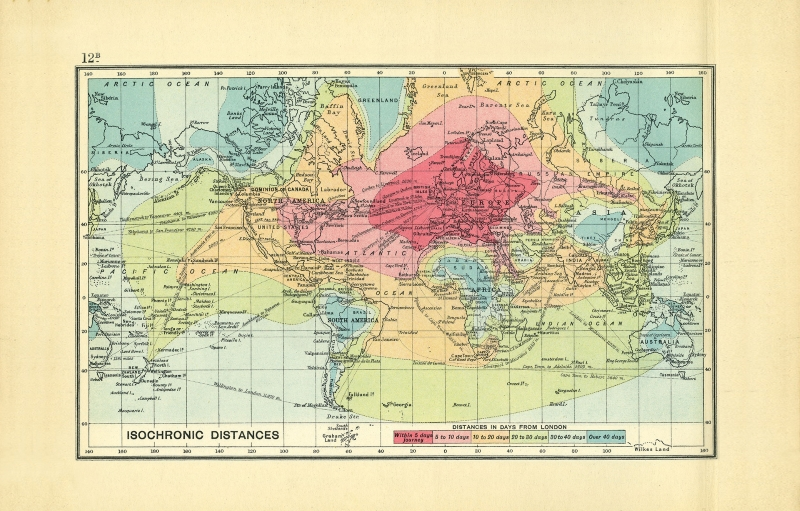

Bartholomap project
A while ago I read an article in Intelligent Life about a hundred year old map that showed how long it took to travel from London to anywhere on the globe. The map, made before airtravel was common, show the influence of shipping routes and intercontinental railways. Within a month you could travel to all but the most remote and landlocked places.

{kind=link}
An isochronic map created by John George Bartholomew showing various travel times from London in 1914 Photo: RGS/Intelligent Life
Air travel map
Since that map was created the world has changed, and I was wondering how such a map would look like if it was created today. Since airtravel is the popular choice for long distance travel I decided to start with that. The OpenFlights project provides a list of airport-locations and flight-routes. Taking London as a starting point and using 600km/h as travelspeed it was fairly easy to calculate the time it takes to get to each of the ~3000 airports in the list. TBD: link naar github. Since contemporary travel is so much faster I changed the scale from days to hours:
within 5 hours5 to 10 hours10 to 20 hours20 to 30 hours30 to 40 hoursover 40 hours
{kind=link}
{kind=link}
Map of all airports as ±3000 dots classified by travel time (left) and as isochronic lines (right)
Enhance with OSRM
However as any traveler knows, being at the airport doesn't mean that you have arrived. To further the resolution of the isochronic map I used the 7000 places from Natural Earth Data to calculate the travel time to actual places. For each place I looked up the nearest airport TBD: link naar github and ran the two coordinates against the Open Source Routing Machine. The resulting maps have more detail, but since only about half of the places were routable we still have some work to do.
{kind=link}
{kind=link}
Map of all airports and routable places as ±8000 dots classified by travel time (left) and as isochronic lines (right)
As the crow flies
For about 3000 places which did not get a result from the previous exercise, I decided to divide them into landlocked and coastal cities. (This could be done way more advanced, but I just looked on the map and made a judgement call). For both types of places I calculated the straight line distance (using great arc distance) and decided upon 5km/h as landspeed and 25km/h for water. This way I had the traveltime from London to more than ten thousand places around the globe.
{kind=link}
{kind=link}
Map of all airports and places as ±10000 dots classified by travel time (left) and as isochronic lines (right)
Manual labour
This is as far as the automated process can go. John George Bartholomew created his map by hand, and to recreate his map I'll have to do some handwork myself. The isochronic lines generated by turf.js are lines and nicely closed polygons with holes. Also there are some issues at the edge of the map and there might be just too much detail.